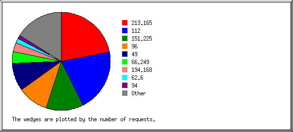
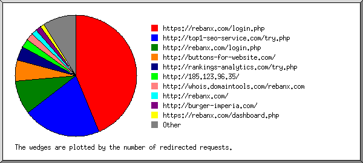
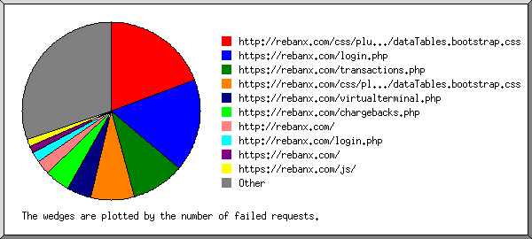
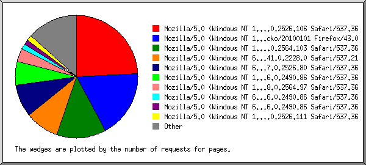
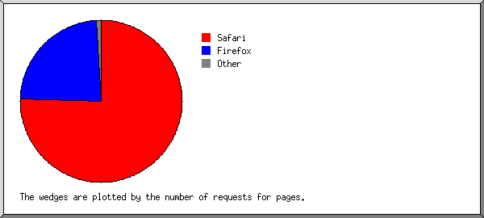
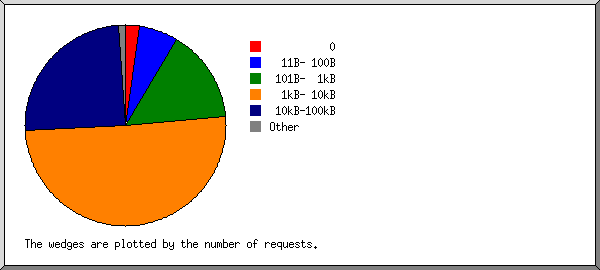
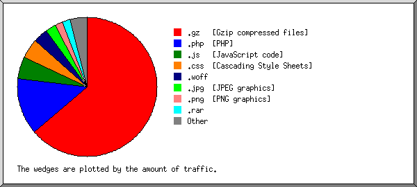
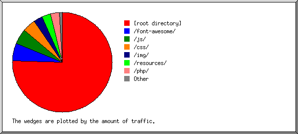

Web Server Statistics for rebanx.com
Web Server Statistics for rebanx.com
Program started on Thu, Dec 31 2015 at 7:34 AM.
Analyzed requests from Sun, Nov 22 2015 at 10:55 AM to Thu, Dec 31 2015 at 6:04 AM (38.80 days).
Web Server Statistics for rebanx.comProgram started on Thu, Dec 31 2015 at 7:34 AM.
Analyzed requests from Sun, Nov 22 2015 at 10:55 AM to Thu, Dec 31 2015 at 6:04 AM (38.80 days).
(Go To: Top | General Summary | Monthly Report | Daily Summary | Hourly Summary | Domain Report | Organization Report | Redirected Referrer Report | Failed Referrer Report | Referring Site Report | Browser Report | Browser Summary | Operating System Report | Status Code Report | File Size Report | File Type Report | Directory Report | Request Report)
Figures in parentheses refer to the 7-day period ending Dec 31 2015 at 7:34 AM.
Successful requests: 2,575 (25)
Average successful requests per day: 66 (3)
Successful requests for pages: 51 (0)
Average successful requests for pages per day: 1
Failed requests: 433 (3)
Redirected requests: 1,073 (48)
Distinct files requested: 328 (1)
Distinct hosts served: 134 (6)
Data transferred: 198.45 megabytes (750 bytes)
Average data transferred per day: 5.11 megabytes (107 bytes)
(Go To: Top | General Summary | Monthly Report | Daily Summary | Hourly Summary | Domain Report | Organization Report | Redirected Referrer Report | Failed Referrer Report | Referring Site Report | Browser Report | Browser Summary | Operating System Report | Status Code Report | File Size Report | File Type Report | Directory Report | Request Report)
Each unit ( ) represents 1 request for a page.
) represents 1 request for a page.
| month | #reqs | #pages | |
|---|---|---|---|
| Nov 2015 | 1661 | 26 |    |
| Dec 2015 | 914 | 25 | |
Busiest month: Nov 2015 (26 requests for pages).
(Go To: Top | General Summary | Monthly Report | Daily Summary | Hourly Summary | Domain Report | Organization Report | Redirected Referrer Report | Failed Referrer Report | Referring Site Report | Browser Report | Browser Summary | Operating System Report | Status Code Report | File Size Report | File Type Report | Directory Report | Request Report)
Each unit () represents 1 request for a page.
| day | #reqs | #pages | |
|---|---|---|---|
| Sun | 359 | 31 |  |
| Mon | 502 | 4 | |
| Tue | 396 | 3 | |
| Wed | 186 | 1 | |
| Thu | 827 | 9 | |
| Fri | 122 | 1 | |
| Sat | 183 | 2 | |
(Go To: Top | General Summary | Monthly Report | Daily Summary | Hourly Summary | Domain Report | Organization Report | Redirected Referrer Report | Failed Referrer Report | Referring Site Report | Browser Report | Browser Summary | Operating System Report | Status Code Report | File Size Report | File Type Report | Directory Report | Request Report)
Each unit () represents 1 request for a page.
| hour | #reqs | #pages | |
|---|---|---|---|
| 0 | 154 | 2 | |
| 1 | 15 | 0 | |
| 2 | 32 | 0 | |
| 3 | 190 | 2 | |
| 4 | 30 | 0 | |
| 5 | 202 | 3 | |
| 6 | 213 | 4 | |
| 7 | 49 | 0 | |
| 8 | 30 | 0 | |
| 9 | 55 | 1 | |
| 10 | 61 | 1 | |
| 11 | 148 | 0 | |
| 12 | 55 | 2 | |
| 13 | 107 | 2 | |
| 14 | 295 | 20 | |
| 15 | 61 | 1 | |
| 16 | 64 | 0 | |
| 17 | 44 | 0 | |
| 18 | 174 | 0 | |
| 19 | 286 | 4 | |
| 20 | 54 | 2 | |
| 21 | 105 | 1 | |
| 22 | 33 | 3 | |
| 23 | 118 | 3 | |
(Go To: Top | General Summary | Monthly Report | Daily Summary | Hourly Summary | Domain Report | Organization Report | Redirected Referrer Report | Failed Referrer Report | Referring Site Report | Browser Report | Browser Summary | Operating System Report | Status Code Report | File Size Report | File Type Report | Directory Report | Request Report)
Listing domains, sorted by the amount of traffic.
| #reqs | %bytes | domain |
|---|---|---|
| 2575 | 100% | [unresolved numerical addresses] |
(Go To: Top | General Summary | Monthly Report | Daily Summary | Hourly Summary | Domain Report | Organization Report | Redirected Referrer Report | Failed Referrer Report | Referring Site Report | Browser Report | Browser Summary | Operating System Report | Status Code Report | File Size Report | File Type Report | Directory Report | Request Report)

Listing the top 20 organizations by the number of requests, sorted by the number of requests.
| #reqs | %bytes | organization |
|---|---|---|
| 946 | 4.60% | 49 |
| 622 | 90.27% | 96 |
| 148 | 0.96% | 62.6 |
| 120 | 0.82% | 94 |
| 113 | 0.25% | 66.249 |
| 82 | 0.49% | 151.228 |
| 74 | 0.35% | 112 |
| 71 | 0.46% | 180.191 |
| 46 | 0.22% | 66.229 |
| 41 | 0.17% | 87 |
| 16 | 174.129 | |
| 15 | 157.55 | |
| 12 | 0.11% | 179.209 |
| 12 | 0.18% | 177.47 |
| 9 | 198.20 | |
| 8 | 0.04% | 119 |
| 7 | 0.03% | 121 |
| 6 | 0.03% | 186.211 |
| 6 | 0.08% | 143.137 |
| 6 | 137.116 | |
| 215 | 0.94% | [not listed: 58 organizations] |
(Go To: Top | General Summary | Monthly Report | Daily Summary | Hourly Summary | Domain Report | Organization Report | Redirected Referrer Report | Failed Referrer Report | Referring Site Report | Browser Report | Browser Summary | Operating System Report | Status Code Report | File Size Report | File Type Report | Directory Report | Request Report)

Listing referring URLs, sorted by the number of redirected requests.
(Go To: Top | General Summary | Monthly Report | Daily Summary | Hourly Summary | Domain Report | Organization Report | Redirected Referrer Report | Failed Referrer Report | Referring Site Report | Browser Report | Browser Summary | Operating System Report | Status Code Report | File Size Report | File Type Report | Directory Report | Request Report)

Listing referring URLs, sorted by the number of failed requests.
(Go To: Top | General Summary | Monthly Report | Daily Summary | Hourly Summary | Domain Report | Organization Report | Redirected Referrer Report | Failed Referrer Report | Referring Site Report | Browser Report | Browser Summary | Operating System Report | Status Code Report | File Size Report | File Type Report | Directory Report | Request Report)

Listing referring sites, sorted by the number of requests.
| #reqs | site |
|---|---|
| 2174 | http://rebanx.com/ |
| 24 | http://rankings-analytics.com/ |
| 8 | http://www.rebanx.com/ |
| 4 | http://buttons-for-website.com/ |
| 2 | http://fast-wordpress-start.com/ |
| 1 | http://www.google.com/ |
| 1 | http://whois.domaintools.com/ |
| 1 | http://www.baidu.com/ |
(Go To: Top | General Summary | Monthly Report | Daily Summary | Hourly Summary | Domain Report | Organization Report | Redirected Referrer Report | Failed Referrer Report | Referring Site Report | Browser Report | Browser Summary | Operating System Report | Status Code Report | File Size Report | File Type Report | Directory Report | Request Report)

Listing browsers with at least 1 request for a page, sorted by the number of requests for pages.
| #reqs | #pages | browser |
|---|---|---|
| 217 | 19 | Mozilla/5.0 (Windows NT 6.1; WOW64) AppleWebKit/537.36 (KHTML, like Gecko) Chrome/47.0.2526.80 Safari/537.36 |
| 892 | 14 | Mozilla/5.0 (Windows NT 10.0; WOW64) AppleWebKit/537.36 (KHTML, like Gecko) Chrome/46.0.2490.86 Safari/537.36 |
| 336 | 3 | Mozilla/5.0 (Windows NT 6.3; WOW64) AppleWebKit/537.36 (KHTML, like Gecko) Chrome/46.0.2490.86 Safari/537.36 |
| 318 | 3 | Mozilla/5.0 (Windows NT 6.1; WOW64) AppleWebKit/537.36 (KHTML, like Gecko) Chrome/46.0.2490.86 Safari/537.36 |
| 36 | 2 | Google favicon |
| 23 | 2 | Mozilla/5.0 (X11; Linux x86_64; rv:38.0) Gecko/20100101 Firefox/38.0 |
| 6 | 1 | Mozilla/5.0 (X11; Ubuntu; Linux x86_64; rv:42.0) Gecko/20100101 Firefox/42.0 |
| 1 | 1 | Mozilla/5.0 (iPhone; CPU iPhone OS 5_0 like Mac OS X) (Compatible; AppleWebKit/534.46 (KHTML, like Gecko) Version/5.1 Mobile/9A334; Safari/7534.48.3; Trident/5.0) |
| 53 | 1 | Mozilla/5.0 (iPhone; CPU iPhone OS 8_4_1 like Mac OS X) AppleWebKit/600.1.4 (KHTML, like Gecko) Version/8.0 Mobile/12H321 Safari/600.1.4 |
| 76 | 1 | Mozilla/5.0 (Windows NT 6.2; WOW64) AppleWebKit/537.36 (KHTML, like Gecko) Chrome/46.0.2490.86 Safari/537.36 OPR/33.0.1990.115 |
| 72 | 1 | Mozilla/5.0 (Macintosh; Intel Mac OS X 10_11_1) AppleWebKit/537.36 (KHTML, like Gecko) Chrome/46.0.2490.86 Safari/537.36 |
| 4 | 1 | Mozilla/5.0 (X11; Linux x86_64) AppleWebKit/537.36 (KHTML, like Gecko; Google Web Preview) Chrome/27.0.1453 Safari/537.36 |
| 60 | 1 | Mozilla/5.0 (Windows NT 6.1) AppleWebKit/537.36 (KHTML, like Gecko) Chrome/46.0.2490.86 Safari/537.36 |
| 454 | 0 | [not listed: 39 browsers] |
(Go To: Top | General Summary | Monthly Report | Daily Summary | Hourly Summary | Domain Report | Organization Report | Redirected Referrer Report | Failed Referrer Report | Referring Site Report | Browser Report | Browser Summary | Operating System Report | Status Code Report | File Size Report | File Type Report | Directory Report | Request Report)

Listing browsers with at least 1 request for a page, sorted by the number of requests for pages.
| # | #reqs | #pages | browser |
|---|---|---|---|
| 1 | 2248 | 45 | Safari |
| 2188 | 43 | Safari/537 | |
| 58 | 1 | Safari/600 | |
| 1 | 1 | Safari/7534 | |
| 2 | 83 | 3 | Firefox |
| 23 | 2 | Firefox/38 | |
| 50 | 1 | Firefox/42 | |
| 3 | 36 | 2 | Google favicon |
| 181 | 0 | [not listed: 12 browsers] |
(Go To: Top | General Summary | Monthly Report | Daily Summary | Hourly Summary | Domain Report | Organization Report | Redirected Referrer Report | Failed Referrer Report | Referring Site Report | Browser Report | Browser Summary | Operating System Report | Status Code Report | File Size Report | File Type Report | Directory Report | Request Report)

Listing operating systems, sorted by the number of requests for pages.
| # | #reqs | #pages | OS |
|---|---|---|---|
| 1 | 2195 | 41 | Windows |
| 1297 | 27 | Unknown Windows | |
| 892 | 14 | Windows NT | |
| 5 | 0 | Windows XP | |
| 1 | 0 | Windows Server 2003 | |
| 2 | 44 | 4 | Unix |
| 44 | 4 | Linux | |
| 3 | 149 | 3 | Macintosh |
| 4 | 152 | 2 | OS unknown |
| 5 | 8 | 0 | Known robots |
(Go To: Top | General Summary | Monthly Report | Daily Summary | Hourly Summary | Domain Report | Organization Report | Redirected Referrer Report | Failed Referrer Report | Referring Site Report | Browser Report | Browser Summary | Operating System Report | Status Code Report | File Size Report | File Type Report | Directory Report | Request Report)

Listing status codes, sorted numerically.
| #reqs | status code |
|---|---|
| 2424 | 200 OK |
| 10 | 301 Document moved permanently |
| 1063 | 302 Document found elsewhere |
| 151 | 304 Not modified since last retrieval |
| 3 | 400 Bad request |
| 15 | 401 Authentication required |
| 10 | 403 Access forbidden |
| 396 | 404 Document not found |
| 9 | 504 Gateway timeout |
(Go To: Top | General Summary | Monthly Report | Daily Summary | Hourly Summary | Domain Report | Organization Report | Redirected Referrer Report | Failed Referrer Report | Referring Site Report | Browser Report | Browser Summary | Operating System Report | Status Code Report | File Size Report | File Type Report | Directory Report | Request Report)

| size | #reqs | %bytes |
|---|---|---|
| 0 | 177 | |
| 1B- 10B | 0 | |
| 11B- 100B | 78 | |
| 101B- 1kB | 317 | 0.07% |
| 1kB- 10kB | 1182 | 2.40% |
| 10kB-100kB | 779 | 8.87% |
| 100kB- 1MB | 40 | 2.49% |
| 1MB- 10MB | 1 | 2.45% |
| 10MB-100MB | 0 | |
| 100MB- 1GB | 1 | 83.72% |
(Go To: Top | General Summary | Monthly Report | Daily Summary | Hourly Summary | Domain Report | Organization Report | Redirected Referrer Report | Failed Referrer Report | Referring Site Report | Browser Report | Browser Summary | Operating System Report | Status Code Report | File Size Report | File Type Report | Directory Report | Request Report)

Listing extensions with at least 0.1% of the traffic, sorted by the amount of traffic.
| #reqs | %bytes | extension |
|---|---|---|
| 3 | 83.74% | .gz [Gzip compressed files] |
| 1 | 83.72% | .tar.gz [Compressed archives] |
| 1153 | 5.29% | .php [PHP] |
| 1 | 2.45% | .rar |
| 402 | 2.35% | .js [JavaScript code] |
| 556 | 1.88% | .css [Cascading Style Sheets] |
| 163 | 1.72% | .png [PNG graphics] |
| 84 | 1.22% | .jpg [JPEG graphics] |
| 21 | 0.64% | .woff |
| 19 | 0.39% | .ico |
| 6 | 0.17% | .swf |
| 28 | 0.10% | .html [Hypertext Markup Language] |
| 139 | 0.05% | [not listed: 3 extensions] |
(Go To: Top | General Summary | Monthly Report | Daily Summary | Hourly Summary | Domain Report | Organization Report | Redirected Referrer Report | Failed Referrer Report | Referring Site Report | Browser Report | Browser Summary | Operating System Report | Status Code Report | File Size Report | File Type Report | Directory Report | Request Report)

Listing directories with at least 0.01% of the traffic, sorted by the amount of traffic.
| #reqs | %bytes | directory |
|---|---|---|
| 970 | 88.84% | [root directory] |
| 140 | 3.80% | /resources/ |
| 344 | 2.11% | /js/ |
| 88 | 1.87% | /img/ |
| 489 | 1.74% | /css/ |
| 100 | 0.77% | /font-awesome/ |
| 319 | 0.65% | /php/ |
| 86 | 0.18% | /favicon/ |
| 4 | 0.02% | /TID-1529287/ |
| 35 | 0.01% | [not listed: 4 directories] |
(Go To: Top | General Summary | Monthly Report | Daily Summary | Hourly Summary | Domain Report | Organization Report | Redirected Referrer Report | Failed Referrer Report | Referring Site Report | Browser Report | Browser Summary | Operating System Report | Status Code Report | File Size Report | File Type Report | Directory Report | Request Report)

Listing files with at least 20 requests, sorted by the number of requests.
| #reqs | %bytes | last time | file |
|---|---|---|---|
| 285 | 0.39% | Dec/22/15 4:35 PM | /login.php |
| 20 | 0.03% | Dec/13/15 1:31 PM | /login.php?logout=true |
| 177 | 1.30% | Dec/13/15 1:30 PM | /dashboard.php |
| 111 | 0.46% | Dec/13/15 1:30 PM | /php/inc_dailyreport.php |
| 101 | 0.10% | Dec/ 7/15 5:41 AM | /php/inc_viewagent.php |
| 13 | Dec/ 7/15 5:41 AM | /php/inc_viewagent.php?q=accinfo&agentid=6&merchantid= | |
| 82 | 0.21% | Dec/23/15 8:25 AM | /font-awesome/css/font-awesome.css |
| 80 | 0.69% | Dec/13/15 2:15 PM | /css/bootstrap.min.css |
| 80 | 0.61% | Dec/13/15 2:15 PM | /css/style.css |
| 80 | 0.19% | Dec/13/15 2:15 PM | /css/animate.css |
| 78 | Dec/31/15 2:11 AM | /robots.txt | |
| 59 | 0.45% | Dec/13/15 2:15 PM | /img/logo.jpg |
| 54 | 0.03% | Dec/13/15 2:15 PM | /favicon/favicon-16x16.png |
| 49 | 0.24% | Dec/ 9/15 8:24 PM | /viewagent.php |
| 20 | 0.10% | Dec/ 7/15 5:41 AM | /viewagent.php?agentid=6 |
| 10 | 0.04% | Dec/ 5/15 3:18 AM | /viewagent.php?agentid=19 |
| 43 | 0.45% | Dec/ 9/15 8:24 PM | /users.php |
| 36 | 0.02% | Dec/13/15 2:19 PM | /forgot-password.php |
| 33 | 0.19% | Dec/ 9/15 11:36 PM | /processormerchantmanager.php |
| 29 | 0.19% | Dec/ 9/15 11:36 PM | /processors.php |
| 28 | 0.21% | Dec/ 9/15 8:41 PM | /fees.php |
| 26 | 0.40% | Dec/ 9/15 11:36 PM | /addagent.php |
| 25 | 0.42% | Dec/ 9/15 11:37 PM | /virtualterminal.php |
| 25 | 0.20% | Dec/ 9/15 8:40 PM | /chargebacks.php |
| 13 | 0.11% | Dec/ 7/15 11:27 AM | /chargebacks.php?type=cb |
| 25 | 0.15% | Dec/ 9/15 11:36 PM | /user.php |
| 24 | 0.06% | Dec/13/15 1:08 PM | /js/plugins/validate/jquery.validate.min.js |
| 24 | 0.19% | Dec/ 9/15 8:22 PM | /reports.php |
| 24 | 0.24% | Dec/13/15 1:08 PM | /js/jquery-2.1.1.js |
| 21 | 0.01% | Dec/13/15 1:08 PM | /js/plugins/slimscroll/jquery.slimscroll.min.js |
| 21 | 0.03% | Dec/13/15 1:08 PM | /js/plugins/staps/jquery.steps.min.js |
| 21 | 0.01% | Dec/13/15 1:08 PM | /js/plugins/metisMenu/jquery.metisMenu.js |
| 21 | 0.01% | Dec/13/15 1:08 PM | /css/plugins/dropzone/dropzone.css |
| 21 | Dec/13/15 1:08 PM | /css/plugins/iCheck/custom.css | |
| 21 | 0.01% | Dec/13/15 1:08 PM | /js/inspinia.js |
| 21 | 0.08% | Dec/13/15 1:08 PM | /skin-config.html |
| 21 | 0.02% | Dec/13/15 1:08 PM | /css/plugins/datapicker/datepicker3.css |
| 21 | 0.01% | Dec/13/15 1:08 PM | /css/plugins/dataTables/dataTables.tableTools.min.css |
| 21 | 0.02% | Dec/13/15 1:08 PM | /css/plugins/chosen/chosen.css |
| 21 | 0.03% | Dec/13/15 1:08 PM | /js/plugins/pace/pace.min.js |
| 21 | 0.01% | Dec/13/15 1:08 PM | /css/plugins/dataTables/dataTables.bootstrap.css |
| 21 | 0.01% | Dec/13/15 1:08 PM | /css/plugins/steps/jquery.steps.css |
| 21 | Dec/13/15 1:08 PM | /css/plugins/dataTables/dataTables.responsive.css | |
| 21 | 0.01% | Dec/ 7/15 11:29 AM | /php/inc_chart-view.php |
| 21 | 0.06% | Dec/13/15 1:08 PM | /js/bootstrap.min.js |
| 661 | 92.28% | Dec/13/15 2:57 PM | [not listed: 215 files] |